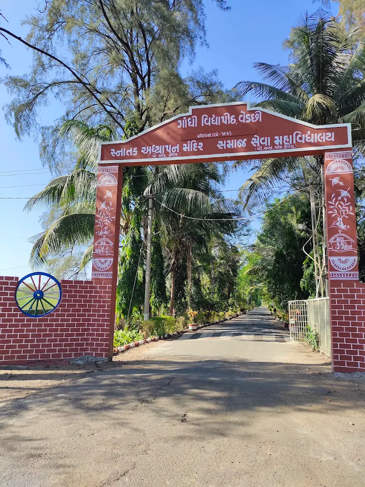

કાર્યક્રમનો મુખ્ય ઉદ્દેશ્ય અને વિભાવના
ભાવિ શિક્ષકોમાં માત્ર સૈદ્ધાંતિક જ્ઞાન જ નહીં, પરંતુ વ્યવહારુ કૌશલ્યો, સ્વતંત્ર વિચારસરણી, સ્વાવલંબન અને કળાત્મક દ્રષ્ટિ ખીલે તેવા ઉદ્દાત હેતુથી District Institute of Education and Training (DIET) દ્વારા 'હું શિક્ષક છું' નામના એક વિશેષ અને અનોખા કાર્યક્રમનું આયોજન કરવામાં આવ્યું હતું.
- શિક્ષકત્વની સાચી ઓળખ: તાલીમાર્થી પોતાનામાં છુપાયેલા શિક્ષકને ઓળખે અને "હું માત્ર એક તાલીમાર્થી નથી, પણ એક જવાબદાર શિક્ષક છું" તેવો આત્મવિશ્વાસ કેળવે.
- પ્રાયોગિક અને સર્જનાત્મક તાલીમ: વર્ગખંડને જીવંત અને રસપ્રદ બનાવવા માટે પરંપરાગત કળા, ટેકનિક અને પ્રવૃત્તિઓનો ઉપયોગ કરતા શીખવવું.
- જીવનમૂલ્યોનું સિંચાઈ: સવાર-સાંજની પ્રાર્થના, સ્વયંપાક અને સાફ-સફાઈ દ્વારા આત્મનિર્ભરતા, શિસ્ત અને શ્રમનું ગૌરવ સમજાવવું.
“શિક્ષક એ નથી જે માત્ર પુસ્તકો ભણાવે છે, શિક્ષક એ છે જે વિદ્યાર્થીના મનમાં જિજ્ઞાસાનો દીવો પ્રગટાવે છે.”
“એક ઉત્તમ શિક્ષક પોતાના આચરણ અને સંસ્કારથી આખી પેઢીનું નિર્માણ કરે છે.”